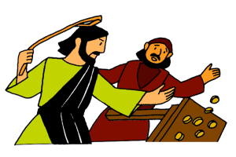
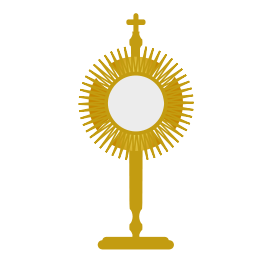
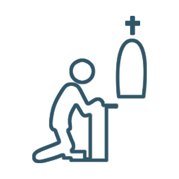
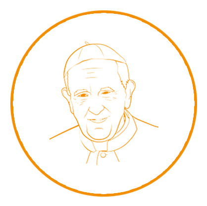
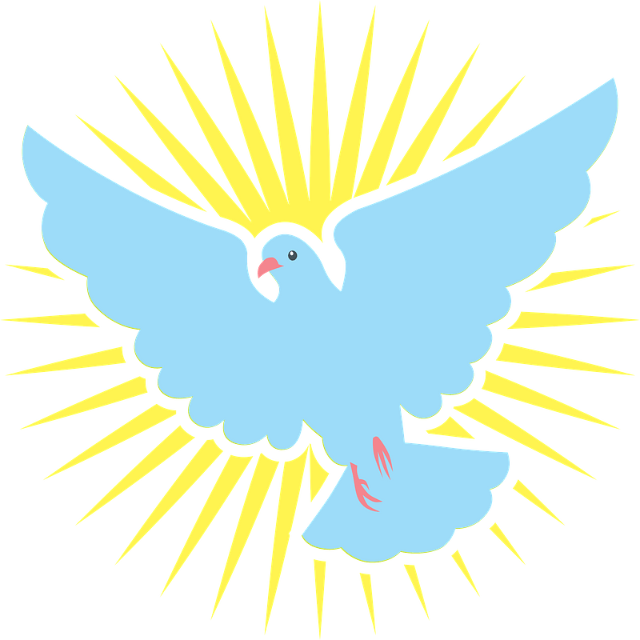
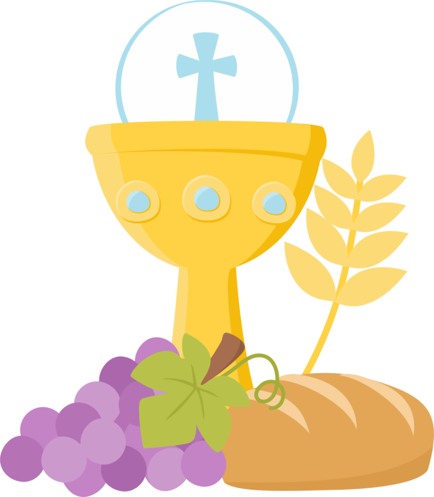

Hora santa por la paz
Monición
La PAZ... uno de los artículos más caros del mundo, casi imposible de conseguir. En contraste nuestro mundo ha puesto muy fácil de comprar la guerra. el hambre, la injusticia, dar muerte al prójimo sin compasión; incluso la del más débil. De poder realizar toda clase de maldades y ser egoístas acumulativos... y no sentirnos mal. De no importarnos dejar un matrimonio y unos hijos a la deriva... el corazón humano está herido y necesita ser sanado. Por ello nos hemos reunido, porque al escuchar el llamado de Jesús, sabemos que sólo a sus plantas de Eucaristía -recibida y adorada- es donde nos sigue haciendo resonar aquellas palabras... "Yo, estaré con ustedes todos los días hasta el fin del mundo"... Ahora, dispongamos nuestro corazón para encontrarnos con Jesús príncipe de la paz y démosle un lugar para que podamos sentir esa paz que sólo Él puede darnos y que es precisamente la que el mundo necesita...
Exposición del Santisimo
Estación Menor
SUPLICA DEL PERDÓN.
GUIA. Porque hemos permitido que la violencia se incremente en nuestra patria. Por el miedo y la inseguridad en que viven los niños, los adolescentes, los jóvenes, las familias y las comunidades de México
TODOS. Perdón Señor y piedad.
GUIA. Por la violencia que se vive dentro de las familias, por nuestras omisiones y por acostumbrarnos a vivir en un mundo violento. Por todos los signos de violencia, que van acabando con la vida comunitaria.
TODOS. Perdón Señor y piedad.
GUIA. Por nuestra indiferencia al dolor de las víctimas, por la sangre de los niños abortados, por la sangre de las mujeres asesinadas.
TODOS. Perdón Señor y piedad.
GUIA. Por los que han sido ejecutados con crueldad y frialdad inhumana. Por la perdida de la vida social, la convivencia armónica y pacífica.
TODOS. Perdón Señor y piedad.
Canto Penitencial
Breve silencio de Adoración personal
Lectura biblica y preguntas para reflexionar
Del Santo Evangelio Según San Juan 14,27.
"Les dejo la paz, les doy mi paz, la paz que yo les doy no es como la que da el mundo. ¡Que no se turbe su corazón, que no haya en ustedes ni angustia, ni miedo!"
El secreto del apostolado es el amor, pues éste es la única fuerza capaz de cambiar el corazón del hombre y de la humanidad entera. Es el valioso aporte que tienen que ofrecer en los esfuerzos por superar la violencia, porque "la paz es también fruto del amor, el cual sobrepasa todo lo que la justicia puede realizar" y aceptar la paz que Cristo nos ofrece es decirle "Creo en Ti".
Ahora en silencio, a través de estas preguntas, descubramos lo que hay en nuestro corazón.
¿Qué impide que a tu corazón llegue la paz que Cristo nos ofrece?
¿Cuáles son tus miedos, tus angustias, tus inseguridades?
¿Cuál es la paz que como laic@ comprometid@ o ciudadan@ deseas?
PARA CONSTRUIR LA PAZ... UN AMOR ARTESANAL.
- PAPA FRANCISCO
Dios prepara el camino para cada hombre. Lo hace con amor: un "amor artesanal", porque lo prepara personalmente para cada uno. Está dispuesto a intervenir cada vez que se deba corregir el camino, propiamente como hacen una mamá y un papá. ¡El tiempo se ha cumplido y el reino de Dios está cerca, conviértanse! Es propio del Dios del amor, no hacernos cristianos por generación espontánea. Él prepara nuestro camino, prepara nuestra vida. Con los Apóstoles... "Parece que Simón, Andrés, Santiago y Juan fueron elegidos y ellos aceptaron definitivamente"; pero esto no significa que desde ese momento hayan sido también "definitivamente fieles". En realidad, precisamente ellos cometieron errores: hicieron propuestas "no evangélicas al Señor", de hecho, lo negaron... y Pedro más que los demás. Se asustaron, "se marcharon, abandonaron al Señor". Se trata de un proceso de preparación, que Jesús llevó adelante con sus discípulos y de ahí con todas las generaciones. Ana, la segunda mujer de Elcaná, (cf. 1 Samuel 1, 1-8). La mujer, "estéril, lloraba" cuando la otra mujer, Feniná, que tenía hijos, se burlaba. Pero en el llanto de Ana estaba la preparación al nacimiento del gran Samuel. "Así, el Señor nos prepara desde hace muchas generaciones. Y cuando las cosas no funcionan bien, Él se mezcla en la historia" y las acomoda.
En la misma genealogía de Jesús, hay "pecadores y pecadoras". ¿Cómo obró el Señor? Se mezcló; corrigió el camino; puso orden en las cosas. Pensemos en el gran David, gran pecador y luego gran santo. El Señor sabe. Cuando el Señor nos dice: con amor eterno te he amado, se refiere a esto. Desde hace muchas generaciones el Señor ha pensado "en nosotros""". Y así nos acompaña experimentando nuestros mismos sentimientos cuando nos acercamos al matrimonio, cuando se espera un hijo: en cada momento de nuestra historia "nos espera y nos acompaña". "Esto es el amor eterno del Señor... Concreto y artesanal, porque Él va construyendo la historia y va preparando el camino para cada uno de nosotros. Esto es el amor de Dios". Así, ¡Cuántas cosas han pasado! El Señor estaba allí preparando el camino también para otros que no conocemos, pero que Él conoce". Él es "el Señor de la preparación, que nos ama desde siempre y nunca nos abandona".
¿El Señor cuenta contigo para construir la Paz? Tal vez "es un acto de fe no fácil de creerlo, es verdad. Porque nuestro racionalismo nos hace decir: ¿por qué el Señor, con las numerosas personas con las que cuenta, va a pensar en mí?". Sin embargo, Él "me ha preparado el camino, con nuestras mamás, nuestras abuelas, nuestros padres, nuestros abuelos y bisabuelos, con todos: el Señor hace así. Y esto es su amor: concreto, eterno y también artesanal". "Recemos pidiendo esta gracia de comprender el amor de Dios.
Breve silencio de reflexión personal...Frases del Papa Juan XXIII para reflexionar sobre la paz.
- Nada de lo que ocurra a los hombres nos debe resultar ajeno (fraternidad, solidaridad).
- La justicia se defiende con la razón y no con las armas (buscar la verdad, no fanatismos).
- No se pierde nada con la paz y puede perderse todo con la guerra (paz es progreso).
- Un hombre pacífico hace más que uno con mucho conocimiento (sabiduría).
- La paz es la tranquilidad que procede del orden y de la unidad de voluntades (voluntad de amar).
- La paz ha de estar fundada sobre la verdad, la justicia, la caridad y la libertad (fundamentos).
- Las armas, la violencia, el poder desmedido y la guerra atentan contra ella (amenazas vs. la paz).
Canto eucarístico.
Oración comunitaria:
Hermanos elevemos a Jesucristo nuestra plegaria, rogando que su paz venga sobre nosotros, y digamos:
R. ¡Señor concédenos la paz y la reconciliación!
- Para que la Iglesia sea incansable trabajadora de la paz y sea testigo de la misericordia y la fraternidad en medio del mundo. Oremos
- Para que los gobernantes practiquen la justicia, busquen la igualdad y defiendan la vida en todas sus etapas. Oremos
- Por quienes sufren el conflicto en todas las latitudes de nuestra patria, para que se ablande el corazón de quienes están poniendo en peligro la vida de la sociedad y a todos les conceda la fuerza para resurgir en medio de esta cruenta violencia. Oremos
- Por los cristianos, obispos y sacerdotes perseguidos, para que en medio de la persecución se acreciente su fe, y que su testimonio transforme el corazón de sus opresores. Oremos.
- Por nuestra nación para que en medio del proceso de paz vivamos la reconciliación como hermanos, se reparen los daños causados y alcancemos a ser una sociedad justa y equitativa. Oremos.
- Por todos los cristianos y cristianas, y todas las personas de buena voluntad, para que nunca pierdan la esperanza en la construcción de la paz y que encuentren en ti consuelo, acogida, escucha y verdadera fraternidad. Oremos.
ORACION POR LA PAZ EN MEXICO. (Ver en la página 1.) Oremos. Ahora unidos como hermanos hagamos nuestra la oración de Jesús: Padre nuestro...
BENDICIÓN CON EL SANTÍSIMO.
Canto Eucarístico.
Oh Dios, que en este sacramento admirable nos dejaste el memorial de tu pasión, te pedimos nos concedas venerar de tal modo los sagrados misterios de tu Cuerpo y de tu Sangre, que experimentemos constantemente en nosotros el fruto de tu redención. Tú que vives y reinas por los siglos de los siglos. R. Amén.
Aclamaciones
Bendito sea Dios.
Bendito sea su santo nombre.
Bendito sea Jesucrito, verdadero Dios y verdaderamente nombre...
Canto final